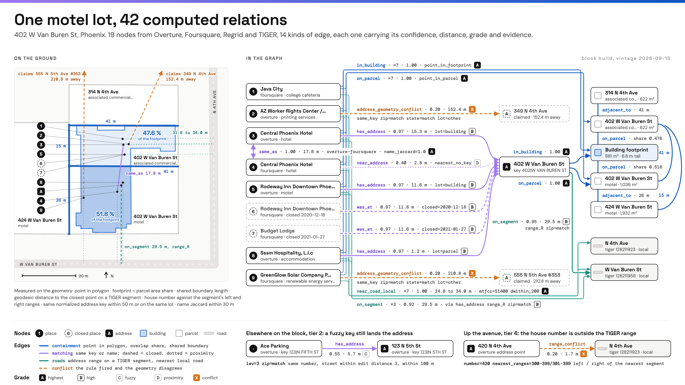

Proof of concept · Sep 2026
Every address, parcel, building, place and road segment in a state gets an ID, and every spatial relationship between them is precomputed as a graded ID-to-ID edge with history. Parcels and road address ranges came from public sources I collected myself; the build runs as distributed spatial SQL (Apache Sedona on Spark) and lands in Apache Iceberg tables.

Utah and Idaho were built as concurrent jobs beside Arizona in 25 minutes for about $10. This version used the pruned 20-relation set, so Arizona is smaller here than in the single-state run above.
35.3M open edges in total. The feature stage then wrote 18.4M node rows by 103 columns and clustered them across 19 strata.
The commercial parcel data available to me covered six counties. To reach statewide coverage I built my own collection instead of buying it.
A loader that walks the public county and state ArcGIS REST parcel services listed in the OpenAddresses index, pages through each layer and writes Parquet to S3 with a manifest, so a rerun retries only failed sources. Ran unattended as a service on a home server. Arizona alone: 3,197,511 parcels; Utah 1,596,933; Idaho 1,165,442.
6,518 files of road edges, address-range features and primary roads, loaded by state into partitioned Parquet in about two hours. These give road class and house-number ranges per street segment.
Addresses, places, building footprints and transportation, with two monthly releases kept so the graph can record what changed.
Foursquare open places as a second POI source to match against; Census ZCTA, county and tract polygons for point-in-polygon codes.
Gaps I documented rather than papered over: 99 Kansas counties publish no parcel layer, and 107 sources were zip downloads rather than map services, so they were left out of this pass.
Each registered as a view with identical columns locally and on the cluster, so every SQL step runs unchanged on both.
Parse free-text addresses into number, street, unit, city and zip with a vectorized UDF; native SQL everywhere else.
One row per feature with H3 (res 5, 9, 12), S2 and geohash cells, census codes and source attributes such as year built, units and floor count.
Containment, overlap, matching, nearest-road and conflict relations, blocked on H3 cells so joins stay local. Each edge carries a grade from A (geometry) to D (nearest within 25 m), plus X for conflicts.
Iceberg tables partitioned by state and H3 res 5. Edges and nodes are slowly changing (valid_from, valid_to), so a monthly refresh adds and closes rows instead of overwriting.
A wide feature row per node (counts, floor-area ratio, parcel coverage, degree by relation) and k-means profiles per property type and stratum.
Exported to DuckDB and PMTiles behind a map that serves all of Arizona.
Shaded orange: data-quality conflicts kept as edges so they can be queried and fixed. A single downtown Phoenix parcel (402 W Van Buren St) yields 19 nodes and 42 edges across 14 relation kinds.
| Area | Scope | Edges | Wall | Compute |
|---|---|---|---|---|
| Maricopa County, AZ | build, features, clusters | 16,605,404 | 23 m 51 s | $7.04 |
| Arizona | build, features, clusters | 27,611,433 | 33 m 56 s | $8.86 |
| AZ + UT + ID | 20 relations, features | 35,280,489 | 25 m* | ~$10* |
* Utah and Idaho built concurrently next to an existing Arizona build; time and cost are for that wave.